People's Priority Engine
Turn unstructured citizen voices into ranked, evidence-backed development projects — with zero bias, full transparency, and real infrastructure data.
MPs receive hundreds of requests with no way to compare a school upgrade against a road repair against a water supply project — apples to oranges, no data basis.
Dense city wards generate more complaints. Rural underserved communities with fewer but more critical needs get drowned out by sheer complaint volume.
Government portals are English-first. Rural citizens who speak Hindi, Kannada, or Tamil have no practical way to submit structured feedback.
Without a transparent, data-backed justification, any development decision can be — and often is — challenged as politically motivated.
"We kept asking ourselves — in a country of 1.4 billion people, why does a development decision still come down to who speaks the loudest in a room? Data exists. Infrastructure gaps are measurable. Citizen voices are everywhere. The missing piece was a system that could actually connect them."
Every other hackathon project wraps an LLM around a prompt. JanMat uses Gemini as a structured parser — every output is schema-validated and written to BigQuery. No hallucinations, no freeform text.
Gemini is forced to return strict JSON — category, GPS coordinates, urgency rating, and English summary. If it can't parse, the submission fails cleanly rather than producing hallucinated data.
P = 0.6×Demand + 0.4×Gap Index. Demand is complaint volume × urgency normalized per capita. Gap Index is derived from Census 2011 and NFHS-5 — public data, not assumptions.
Dashboard projects load in 3–5 seconds via asyncio.gather(). All BigQuery queries and Gemini calls fire simultaneously per project — not sequentially. One Gemini call returns both title and evidence.
Every project recommendation comes with a paragraph citing the exact data behind it — complaint count, average urgency, Census enrollment rate, hospital beds per 1000. Fully auditable.
The Gap Index is computed from the public_infrastructure BigQuery table seeded with Census and NFHS data — not guessed. Roads, Water, Sanitation, Health, Education each have specific metrics.
Demand scores are divided by affected_population before ranking. A rural ward with 10 critical complaints scores higher than an urban ward with 100 minor complaints of the same type.
| Capability | ❌ Typical AI Grievance Portal | ✅ JanMat |
|---|---|---|
| AI Role | Chatbot that summarizes complaints | Deterministic parser → BigQuery, schema-enforced |
| Languages | English only | Voice in Hindi, Kannada, Tamil, Telugu + more via STT + Translation |
| Output | Count of complaints per keyword | Ranked projects with numeric priority score + Evidence Log |
| Data Basis | Volume of complaints | Complaint density × urgency × infrastructure gap from Census/NFHS |
| Bias Protection | None (urban areas dominate) | Population-normalized per 1000 residents |
| Accountability | Black box recommendation | Evidence Log cites exact data rows for every recommendation |
| Input Types | Text form only | Voice note + Photo + Text in any Indian language |
| Connectivity | Requires internet to submit | Offline queue — saves locally, auto-syncs when signal returns |
| Scale | One fixed deployment per portal | Multi-constituency cookie switcher; AlloyDB upgrade path with 4× throughput + read replicas |
From a citizen complaint to a ranked project in the MP dashboard — watch the full end-to-end system in action.
Watch ranked development projects, the demand heatmap, Gemini evidence logs, budget tracker, and multi-constituency switcher — all live.
Submit via voice, photo, or text. Gemini understands the complaint, extracts category and urgency, and GPS-tags it — all in seconds, in any language.
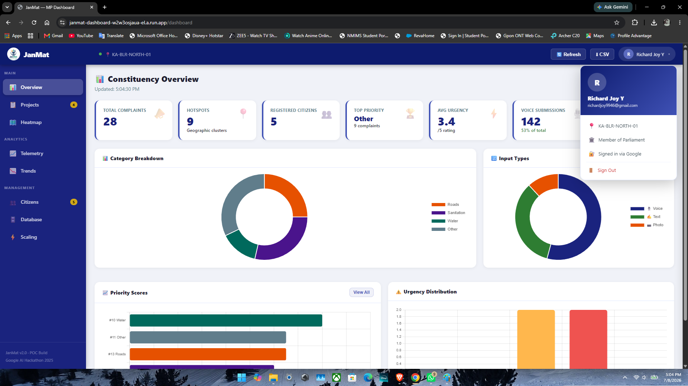
The Overview tab gives an MP a real-time pulse of their constituency — total complaints, geographic hotspot count, top-priority category, and average urgency rating, all from live BigQuery data. No guesswork, no manual collation.
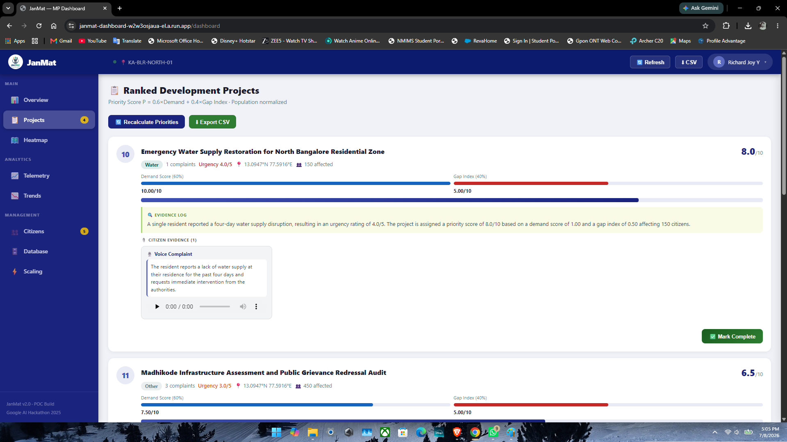
Every development project is ranked by Priority Score P = 0.6×Demand + 0.4×Gap Index. Each card includes a Gemini-generated Evidence Log citing the exact Census and NFHS data rows behind the recommendation. The MP can mark projects complete with AI-verified photo evidence.
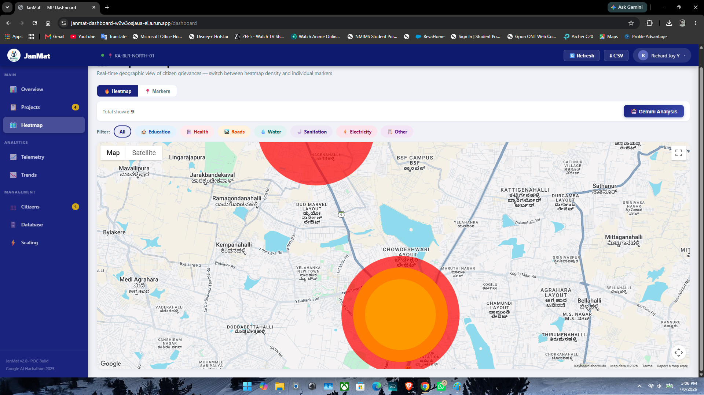
Individual GPS-tagged complaints are plotted on Google Maps as colour-coded density circles — blue to red by complaint weight. Switch to marker mode for individual complaint details. Filter by category. Run Gemini cluster analysis for AI-written area summaries.
A rural resident opens the app and submits a complaint — by voice, photo, or text, in Hindi, Kannada, Tamil, or any Indic language. Gemini extracts category, urgency, and GPS automatically. The structured complaint lands in BigQuery and is visible to the MP within the next pipeline run.
Top projects ranked by Priority Score P = 0.6×D + 0.4×G. Each card shows Gemini-generated title specific to complaint content, evidence log, infrastructure gap, and complaint count.
CTE dedup — always 1 card per categoryAudio complaints show the full Gemini English summary in a styled callout plus an audio player. Image complaints show a thumbnail with caption. No raw unprocessed files.
GCS signed URLsGoogle Maps with two modes: circle heatmap (blue→red by complaint density from individual GPS points) and clustered marker view. MAPS_API_KEY injected as Cloud Run env var.
Replaced deprecated HeatmapLayer v3.65Constituency-level stats: total submissions, category breakdown, pipeline status. Auto-refreshes when Pub/Sub priority-updated event fires after each pipeline run.
10-min server-side cacheCitizen registration stats, city and state breakdown, profile completion rate. Phone-auth only — no email, low-friction for rural users.
Firestore real-timeMP and their office log in with Google. Session-based auth. All credentials in Secret Manager — zero hardcoded secrets. Constituency-scoped data isolation.
JWT + Google OAuth2A 📍 button in the dashboard topbar lets any administrator switch between constituencies live — no re-login, no redeploy. The cookie-stored override passes constituency_id to every backend endpoint. New constituencies onboard in minutes: seed infra + grievances, run the pipeline.
GitHub Actions shuts down Cloud SQL and scales Cloud Run to zero at 11:00 PM IST, and restarts everything at 6:00 AM IST — automatically, every day. Zero manual intervention, zero idle spend during off-hours. Keeps the full system within hackathon credit limits while staying live 17 hours a day.
cron: 30 17 * * * / 30 0 * * *POC runs on Cloud SQL f1-micro to stay within free credits. Production migration to AlloyDB requires one env-var change — the SQLAlchemy ORM layer is identical. AlloyDB delivers 4× read throughput, built-in read replicas, and pgvector support for semantic complaint search across hundreds of constituencies.
Zero code change to upgradePress and speak in any language. Cloud Speech-to-Text transcribes, Translation API normalizes to English, Gemini extracts structured data. A rural citizen can file a complaint in 10 seconds.
6+ Indic languages supportedPhotograph broken infrastructure. Gemini vision endpoint extracts the issue, estimates severity, identifies category. Stored in Cloud Storage with GCS URI linked to the complaint row.
Gemini multimodal visionHindi, Kannada, Tamil, Telugu, Bengali, Marathi — all supported. Gemini handles multilingual parsing directly without a separate translation step for text submissions.
Multilingual Gemini parsingAfter every submission, citizens see their detected category, urgency rating (1–5 stars), and Gemini English summary — instant confirmation that their voice was heard and processed.
SubmissionResult widgetHome screen shows real counts: total submitted, processed, pending — pulled live from Firestore submission_count and subcollection. No more showing zeros.
Live from /users/stats APIChecks GitHub Releases API for newer APK. Downloads and triggers Android installer. Shows "Install started — restart app to complete" after install. No Play Store dependency for POC.
v1.0.3+3 currentSubmissions saved locally to SharedPreferences when no connectivity is detected. Audio and image files are persisted to the app documents directory. Queue flushes automatically the moment connection returns — no data is ever lost in the field.
Low-connectivity designLive screenshots from the deployed system — no mockups, no staging data.
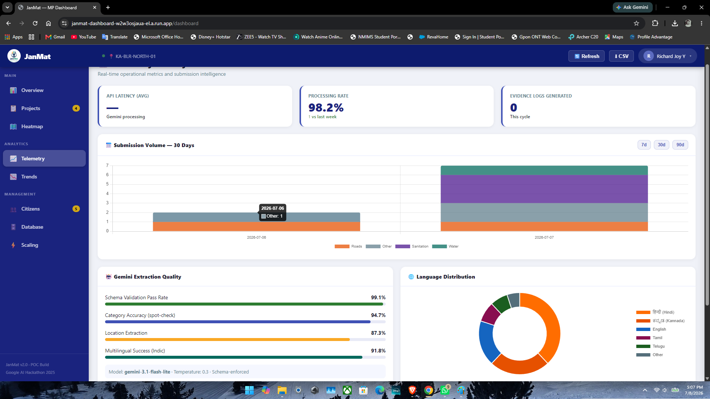
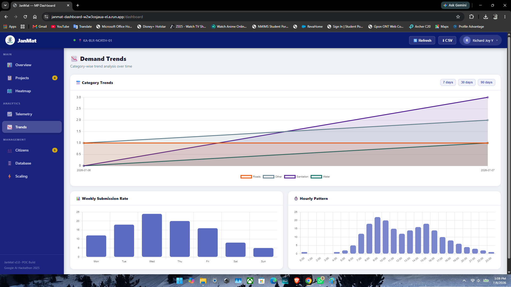
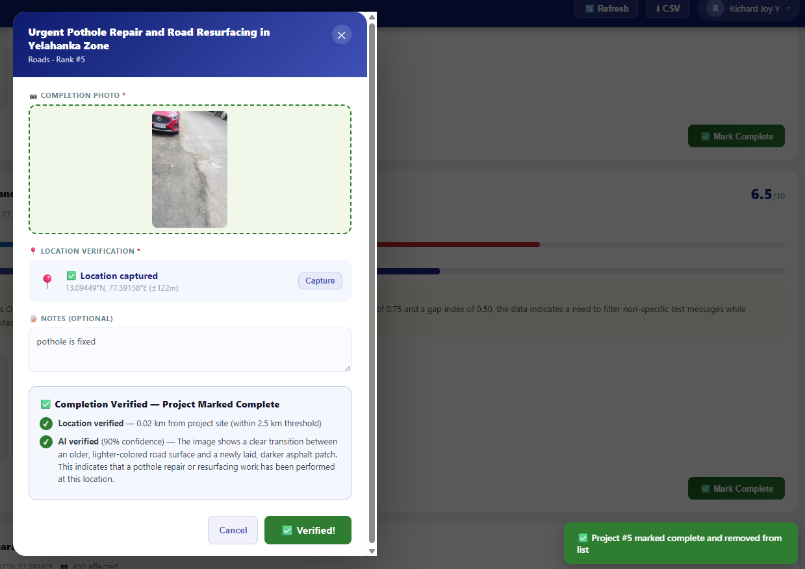
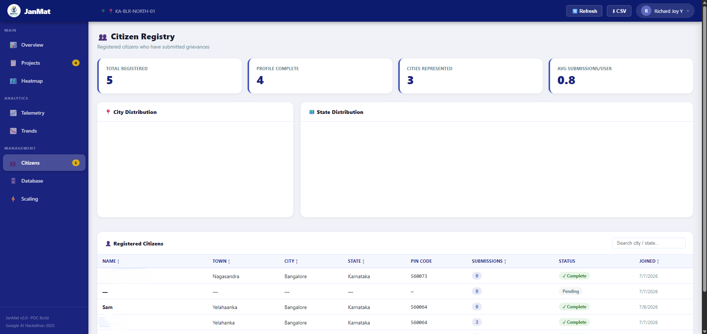
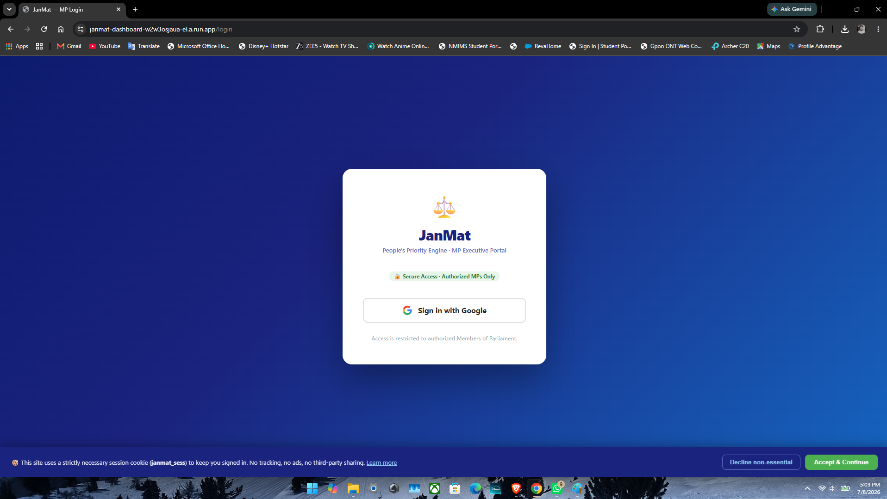
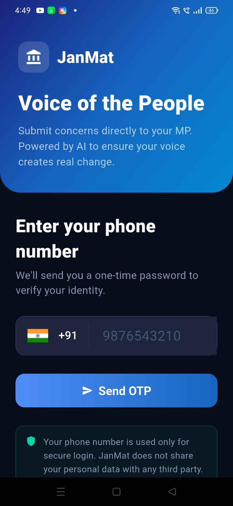
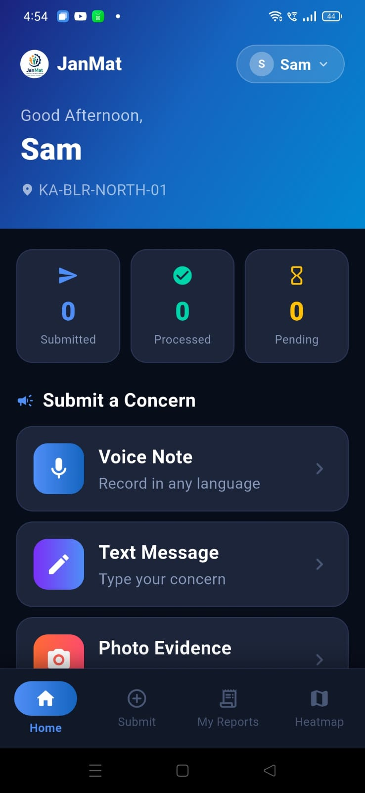
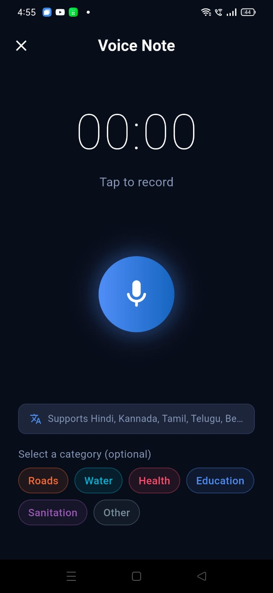
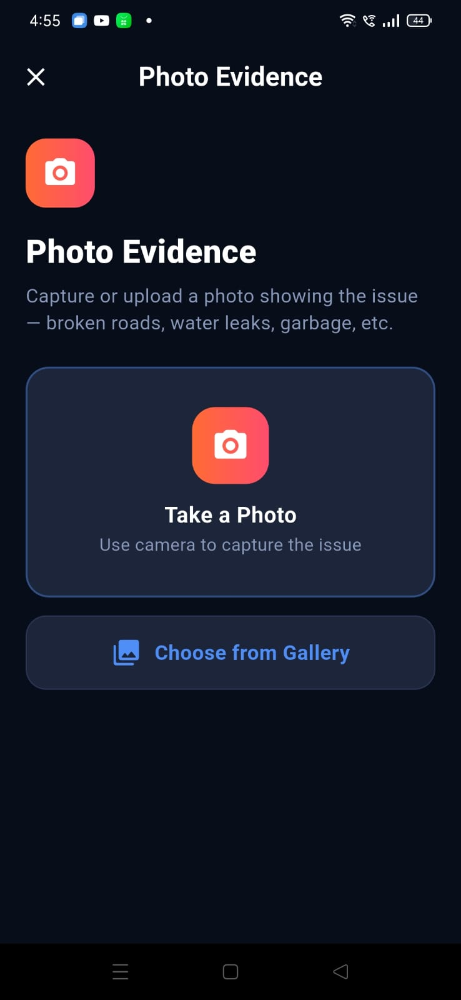
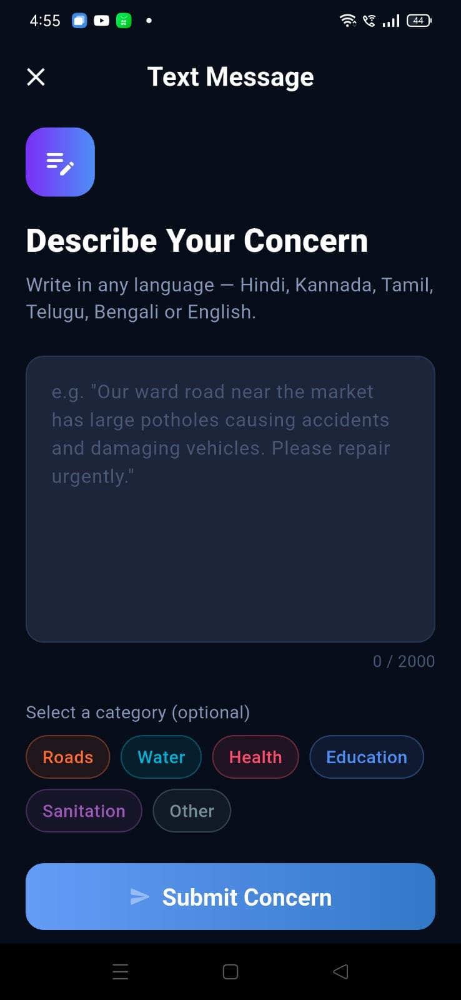
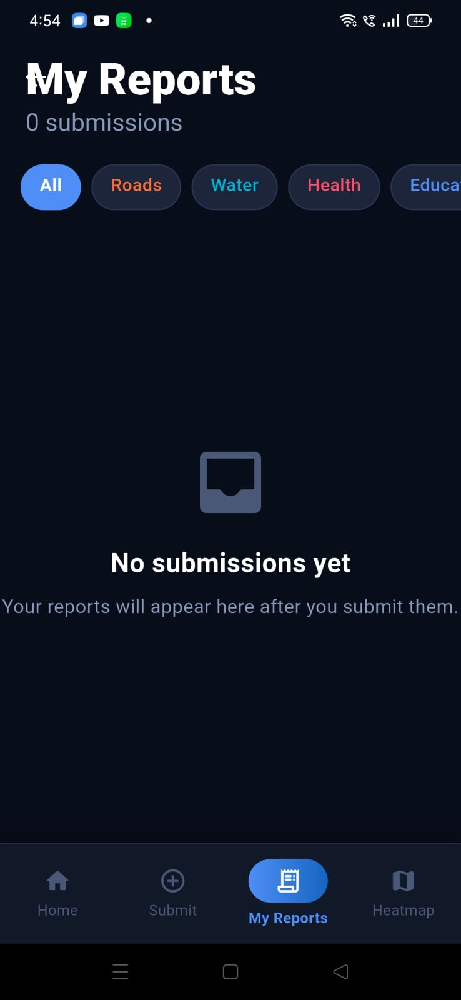
Two parallel journeys — try the citizen app to submit complaints, then watch them appear in the MP dashboard after the pipeline runs.
To stay within Google Cloud hackathon credits, the backend (Cloud SQL + Cloud Run) runs on an
automated cost-guard schedule. GitHub Actions shuts down all services at
11:00 PM IST and restarts them automatically at 6:00 AM IST every day.
The citizen app and Firestore remain fully functional 24/7 — only the MP dashboard and
backend pipeline are offline during the window.
Download the APK from the button below. Enable "Install from unknown sources" in Android settings. Install and open.
Enter your phone number → receive Firebase OTP → verify. No email required. Complete your profile with a name and location.
Tap 🎙️ Voice, press record, speak a complaint in Hindi or English (e.g. "Yahan sadak tooti hui hai"). Gemini processes it and shows a result card with detected category and urgency.
Photograph something or type a complaint. Each one fires the full pipeline independently — transcription → translation → Gemini → BigQuery → Pub/Sub.
Go home — your "Submitted" count increments in real time from Firestore. Every submission you make is tracked.
Switch to airplane mode, submit a complaint — it saves locally with a purple "saved offline" snackbar. Re-enable Wi-Fi, tap Sync Now on the home screen, and the submission goes through. Zero data loss.
Click the "Open MP Dashboard" button above. Sign in with Google. You'll land on the Overview tab showing constituency stats.
See total complaint count, category breakdown, and pipeline status. This reflects all submissions across the constituency in real time.
Click 🔄 Refresh / Recalculate Priorities. This triggers clustering → scoring → Gemini evidence generation. Takes ~15 seconds.
Navigate to Projects tab. See ranked development project cards — Roads, Sanitation, Other — each with a Gemini-generated title, evidence paragraph, and any media attachments from citizen submissions.
Click Heatmap tab. Toggle between 🔥 Heat (color-graded density circles) and 📍 Markers (individual clustered complaint pins). Filter by category.
Both interfaces are live and connected to the same GCP backend (Cloud Run · asia-south1). Submissions made in the citizen app will appear in the MP dashboard after the next pipeline run.
Demand per 1000 residents prevents dense urban wards from always outranking rural areas. 10 critical rural complaints can outrank 100 urban minor ones.
Roads: road_quality_score/10. Health: hospital_beds_per_1000/3.0. Education: 1 – school_enrollment_rate. Water: piped_water_access_pct/100. All from public datasets.
SQL uses QUALIFY ROW_NUMBER() OVER (PARTITION BY category) to guarantee one score per category regardless of pipeline run count. BigQuery CTE on read for zero-duplicate dashboard.
Every citizen submission fires a Pub/Sub message. The pipeline (cluster → score → evidence) runs automatically in background. MP dashboard refreshes on the priority-updated event.
Two engineers, one mission — build the civic tech infrastructure that holds democracy accountable to data.
Built end-to-end in under 72 hours for theBuild with AI: Code for Communities. Every component is production-grade and deployed on GCP asia-south1.